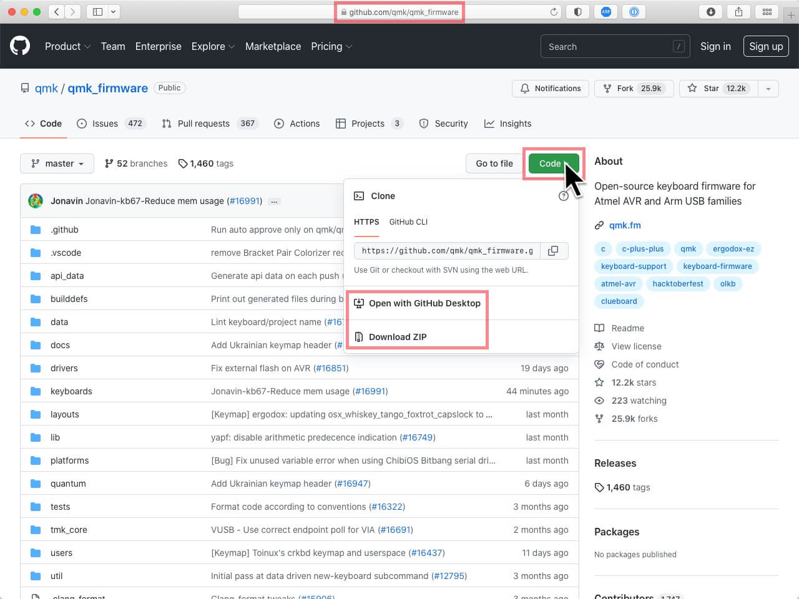

You can get your firmware from 4 different sources:
- Download from our Firmware pages.
This is the recommended firmware and includes some unique IDOBAO functions like Caps-Lock LED, and support for come macOS keys. - Compile from the QMK source code.
- Use the QMK Configurator.
Note that this method will result in a firmware that does not support VIA. Also, these will not include some IDOBAO functions. - Download from caniusevia.com.
This pertains to the firmware in the VIA website section "Firmware" - these will not include some IDOBAO functions.
Choose the method most appropriate for your needs.